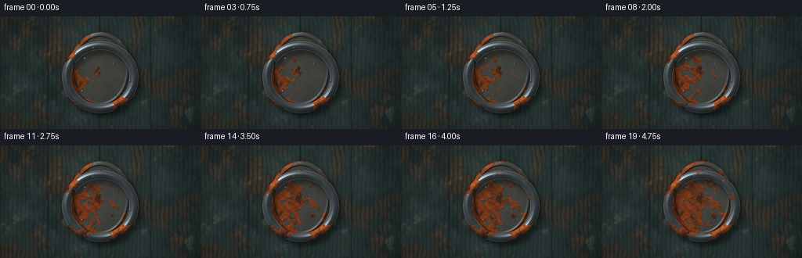
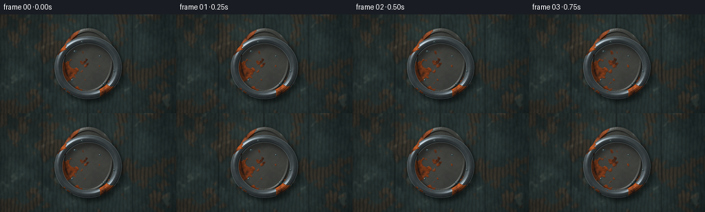

CODING AGENTS AS PIXEL WORLD MODELS
traex/DeepSeek-V4.1-Flash · material_0046
点击播放 · 原生 RGB 像素
此结果可播放，但该运行尚未通过最终提交审核。页面展示不代表评测通过。
逐轮保存的候选
回放视频、检查图与代码变化。
每份候选均可单独播放。实际图片检查记录在下方工具轨迹中。
候选 01播放与检查图
点击播放 · 原生 RGB 像素


展开代码变化
--- 上一保存版本
+++ 本次保存版本
@@ -0,0 +1,456 @@
+from pathlib import Path
+
+import numpy as np
+from PIL import Image, ImageFilter
+from scipy import ndimage
+
+import artifact_io
+
+
+OUT_W, OUT_H = 256, 144
+FPS = 4
+N_FRAMES = 20
+SUPERSAMPLE = 4
+W, H = OUT_W * SUPERSAMPLE, OUT_H * SUPERSAMPLE
+
+YY, XX = np.mgrid[0:H, 0:W].astype(np.float32)
+X = (XX + 0.5) / SUPERSAMPLE
+Y = (YY + 0.5) / SUPERSAMPLE
+
+
+def clamp01(value):
+ return np.clip(value, 0.0, 1.0)
+
+
+def smoothstep(edge0, edge1, value):
+ if edge0 == edge1:
+ return (value >= edge1).astype(np.float32)
+ t = clamp01((value - edge0) / (edge1 - edge0))
+ return t * t * (3.0 - 2.0 * t)
+
+
+def normalize01(value):
+ lo, hi = np.percentile(value, (1.0, 99.0))
+ return clamp01((value - lo) / max(hi - lo, 1e-6))
+
+
+def value_noise(scale_px, seed):
+ rng = np.random.default_rng(seed)
+ grid_h = int(np.ceil(H / scale_px)) + 5
+ grid_w = int(np.ceil(W / scale_px)) + 5
+ grid = rng.random((grid_h, grid_w), dtype=np.float32)
+ sampled = ndimage.map_coordinates(
+ grid,
+ [YY / scale_px, XX / scale_px],
+ order=3,
+ mode="reflect",
+ prefilter=True,
+ )
+ return normalize01(sampled)
+
+
+def fbm(scales, seed):
+ result = np.zeros((H, W), dtype=np.float32)
+ total = 0.0
+ for index, scale in enumerate(scales):
+ weight = 1.0 / (1.35**index)
+ result += weight * value_noise(scale * SUPERSAMPLE, seed + index * 101)
+ total += weight
+ return normalize01(result / total)
+
+
+def shifted(array, dy, dx):
+ return ndimage.shift(
+ array.astype(np.float32),
+ (dy * SUPERSAMPLE, dx * SUPERSAMPLE),
+ order=1,
+ mode="constant",
+ cval=0.0,
+ prefilter=False,
+ )
+
+
+def soft_shadow(mask, dy, dx, sigma):
+ moved = shifted(mask, dy, dx)
+ return ndimage.gaussian_filter(moved, sigma=sigma * SUPERSAMPLE, mode="constant")
+
+
+def distance_inside(mask):
+ return ndimage.distance_transform_edt(mask).astype(np.float32) / SUPERSAMPLE
+
+
+def height_normal(height_px, strength=1.0):
+ grad_y, grad_x = np.gradient(height_px.astype(np.float32))
+ nx = -grad_x * SUPERSAMPLE * strength
+ ny = -grad_y * SUPERSAMPLE * strength
+ nz = np.ones_like(nx)
+ length = np.sqrt(nx * nx + ny * ny + nz * nz)
+ return np.stack((nx / length, ny / length, nz / length), axis=-1)
+
+
+def mix_color(a, b, amount):
+ amount = amount[..., None]
+ return a * (1.0 - amount) + b * amount
+
+
+LIGHT = np.array([-0.54, -0.70, 0.82], dtype=np.float32)
+LIGHT /= np.linalg.norm(LIGHT)
+HALF = LIGHT + np.array([0.0, 0.0, 1.0], dtype=np.float32)
+HALF /= np.linalg.norm(HALF)
+
+
+def shade(albedo, normal, spec_strength=0.5, rim_strength=0.15):
+ nx, ny, nz = normal[..., 0], normal[..., 1], normal[..., 2]
+ diffuse = clamp01(nx * LIGHT[0] + ny * LIGHT[1] + nz * LIGHT[2])
+ half = clamp01(nx * HALF[0] + ny * HALF[1] + nz * HALF[2])
+ sky = clamp01(0.58 - 0.22 * ny)
+ fresnel = clamp01(1.0 - nz) ** 2
+
+ color = albedo * (0.28 + 0.84 * diffuse[..., None])
+ color += np.array([0.045, 0.057, 0.061], dtype=np.float32) * sky[..., None]
+ color += (
+ (half**42)[..., None]
+ * np.array([0.82, 0.88, 0.93], dtype=np.float32)
+ * spec_strength
+ )
+ color += (
+ fresnel[..., None]
+ * np.array([0.28, 0.34, 0.36], dtype=np.float32)
+ * rim_strength
+ )
+ return color
+
+
+def gaussian_spots(x, y, spots):
+ field = np.zeros_like(x, dtype=np.float32)
+ for cx, cy, radius, weight in spots:
+ d2 = (x - cx) ** 2 + (y - cy) ** 2
+ field += weight * np.exp(-d2 / (2.0 * radius * radius))
+ return field
+
+
+def render_wood(noise, fine, scratch):
+ boundaries = np.array([-3.0, 61.5, 127.0, 192.5, 259.0], dtype=np.float32)
+ plank = np.clip(np.searchsorted(boundaries, X, side="right") - 1, 0, 3)
+ plank_tone = np.array([0.96, 1.04, 0.91, 1.01], dtype=np.float32)[plank]
+
+ warp = fbm([68, 30, 13, 5], 212)
+ grain_wave = 0.5 + 0.5 * np.sin(
+ 1.12 * X + 5.7 * warp + 0.55 * np.sin(Y * 0.075 + plank * 0.7)
+ )
+ grain = smoothstep(0.57, 0.96, grain_wave)
+ micro = smoothstep(0.55, 0.82, fine)
+
+ paint_dark = np.array([0.105, 0.145, 0.142], dtype=np.float32)
+ paint_light = np.array([0.185, 0.238, 0.225], dtype=np.float32)
+ paint = mix_color(
+ paint_dark,
+ paint_light,
+ clamp01(0.34 + 0.66 * noise) * plank_tone,
+ )
+
+ wear_field = fbm([34, 17, 8, 4], 307)
+ edge_wear = smoothstep(
+ 0.49,
+ 0.58,
+ np.abs(np.sin(X * 0.035 + 1.2 * noise)) * 0.42 + wear_field * 0.72,
+ )
+ wear = smoothstep(0.66, 0.79, wear_field) * (0.42 + 0.58 * edge_wear)
+ exposed = np.array([0.27, 0.205, 0.145], dtype=np.float32)
+ exposed = exposed * (
+ 0.72 + 0.44 * (1.0 - grain) * (0.65 + 0.35 * fine)
+ )[..., None]
+ wood_color = mix_color(paint, exposed, wear * 0.72)
+ wood_color *= (0.84 + 0.24 * noise)[..., None]
+ wood_color *= (1.0 - 0.22 * grain)[..., None]
+ wood_color *= (0.94 + 0.11 * micro)[..., None]
+
+ seam_distance = np.min(
+ np.stack([np.abs(X - boundary) for boundary in boundaries[1:-1]]), axis=0
+ )
+ seam = np.exp(-((seam_distance / 0.72) ** 2))
+ seam_highlight = np.exp(-(((seam_distance - 1.25) / 0.65) ** 2))
+ wood_color *= (1.0 - 0.62 * seam)[..., None]
+ wood_color += 0.018 * seam_highlight[..., None]
+
+ scratch_line = smoothstep(0.89, 0.985, scratch)
+ wood_color += scratch_line[..., None] * np.array(
+ [0.085, 0.079, 0.064], dtype=np.float32
+ )
+
+ height = 0.11 * grain + 0.08 * fine + 0.05 * wear + 0.16 * seam
+ normal = height_normal(height, strength=0.78)
+ return shade(wood_color, normal, spec_strength=0.045, rim_strength=0.02)
+
+
+def make_rust_field(x, y, mask, noise_a, noise_b, spots, edge_scale):
+ edge_distance = distance_inside(mask)
+ edge = np.exp(-edge_distance / edge_scale)
+ moisture = clamp01((y - 42.0) / 72.0)
+ spot_field = gaussian_spots(x, y, spots)
+ potential = (
+ 0.47 * noise_a
+ + 0.24 * noise_b
+ + 0.16 * edge
+ + 0.08 * moisture
+ + 0.19 * normalize01(spot_field)
+ )
+ return normalize01(potential)
+
+
+def rust_mask_for_time(potential, t):
+ threshold = 0.695 - 0.275 * t
+ broad = smoothstep(threshold, threshold + 0.085, potential)
+ fine_growth = smoothstep(0.34, 0.68, potential + 0.08 * np.sin(t * 4.0))
+ return clamp01(broad * (0.82 + 0.18 * fine_growth))
+
+
+def render_plate(noise, fine, t):
+ pcx, pcy = 128.0, 68.5
+ prx, pry = 40.0, 49.0
+ dx, dy = X - pcx, Y - pcy
+ metric = (dx / prx) ** 2 + (dy / pry) ** 2
+ mask = metric <= 1.0
+ dist_in = distance_inside(mask)
+
+ height = 1.35 * smoothstep(0.0, 4.8, dist_in)
+ height += 1.6 * np.exp(-(((dist_in - 5.1) / 1.15) ** 2))
+ height += 0.22 * (noise - 0.5)
+
+ rivet_height = np.zeros_like(height)
+ rivet_glow = np.zeros_like(height)
+ for cx, cy in ((99.5, 30.5), (156.5, 30.5), (99.5, 111.0), (156.5, 111.0)):
+ d2 = (X - cx) ** 2 + (Y - cy) ** 2
+ bump = 1.8 * np.exp(-d2 / (2.0 * 2.7**2))
+ rivet_height += bump
+ rivet_glow = np.maximum(rivet_glow, np.exp(-d2 / (2.0 * 1.9**2)))
+
+ height += rivet_height
+ normal = height_normal(height, strength=0.82)
+
+ iron = np.array([0.245, 0.238, 0.216], dtype=np.float32)
+ iron = iron * (0.84 + 0.28 * noise)[..., None]
+ plate_color = shade(iron, normal, spec_strength=0.43, rim_strength=0.22)
+ plate_color += rivet_glow[..., None] * np.array(
+ [0.14, 0.13, 0.105], dtype=np.float32
+ )
+
+ potential = make_rust_field(
+ X,
+ Y,
+ mask,
+ fbm([44, 21, 9, 4], 503),
+ fbm([13, 6, 3], 601),
+ [
+ (105.0, 35.0, 9.0, 0.8),
+ (151.0, 42.0, 7.0, 0.6),
+ (92.0, 83.0, 11.0, 0.9),
+ (163.0, 92.0, 8.0, 0.75),
+ (112.0, 112.0, 7.0, 0.55),
+ ],
+ 4.2,
+ )
+ rust = rust_mask_for_time(potential, t)
+ rust_noise = fbm([9, 4, 2], 711)
+ rust_color = mix_color(
+ np.array([0.31, 0.125, 0.045], dtype=np.float32),
+ np.array([0.63, 0.245, 0.055], dtype=np.float32),
+ rust_noise,
+ )
+ rust_color = mix_color(
+ rust_color,
+ np.array([0.19, 0.095, 0.055], dtype=np.float32),
+ smoothstep(0.70, 0.93, 1.0 - rust_noise) * 0.65,
+ )
+ rust_height = rust * (0.34 + 0.58 * rust_noise)
+ rust_normal = height_normal(height + rust_height, strength=0.88)
+ rust_shaded = shade(
+ rust_color,
+ rust_normal,
+ spec_strength=0.10,
+ rim_strength=0.03,
+ )
+ plate_color = mix_color(plate_color, rust_shaded, rust * 0.94)
+ return mask, plate_color, dist_in
+
+
+def render_ring(noise, fine, t):
+ rcx, rcy = 128.0, 77.5
+ rx, ry = 49.0, 46.0
+ dx, dy = X - rcx, Y - rcy
+ rho = np.sqrt((dx / rx) ** 2 + (dy / ry) ** 2)
+ inner = 0.755
+ mask = (rho >= inner) & (rho <= 1.0)
+ dist_in = distance_inside(mask)
+
+ u = (rho - (1.0 + inner) * 0.5) / ((1.0 - inner) * 0.5)
+ rounded = np.sqrt(np.clip(1.0 - u * u, 0.0, 1.0))
+ height = 4.9 * rounded
+ height += 0.28 * (noise - 0.5) * (0.35 + 0.65 * rounded)
+ height -= 0.24 * np.exp(-(((u + 0.38) / 0.13) ** 2))
+ height -= 0.18 * np.exp(-(((u - 0.40) / 0.11) ** 2))
+ normal = height_normal(height, strength=1.0)
+
+ iron = np.array([0.215, 0.235, 0.242], dtype=np.float32)
+ iron = iron * (0.88 + 0.22 * noise)[..., None]
+ ring_color = shade(iron, normal, spec_strength=0.72, rim_strength=0.34)
+ polished_edge = smoothstep(0.72, 0.98, np.abs(u))
+ ring_color += polished_edge[..., None] * np.array(
+ [0.15, 0.16, 0.16], dtype=np.float32
+ )
+
+ potential = make_rust_field(
+ X,
+ Y,
+ mask,
+ fbm([39, 18, 8, 3], 809),
+ fbm([11, 5, 2], 907),
+ [
+ (88.0, 55.0, 8.5, 0.9),
+ (165.0, 63.0, 7.0, 0.65),
+ (101.0, 113.0, 7.5, 0.75),
+ (157.0, 111.0, 9.0, 0.8),
+ (121.0, 31.0, 6.0, 0.5),
+ ],
+ 3.4,
+ )
+ rust = rust_mask_for_time(potential, t + 0.035)
+ rust_noise = fbm([8, 3.5, 1.8], 1009)
+ rust_color = mix_color(
+ np.array([0.30, 0.112, 0.035], dtype=np.float32),
+ np.array([0.70, 0.285, 0.060], dtype=np.float32),
+ rust_noise,
+ )
+ rust_color = mix_color(
+ rust_color,
+ np.array([0.16, 0.082, 0.050], dtype=np.float32),
+ smoothstep(0.72, 0.94, 1.0 - rust_noise) * 0.72,
+ )
+ rust_height = rust * (0.26 + 0.50 * rust_noise)
+ rust_normal = height_normal(height + rust_height, strength=1.0)
+ rust_shaded = shade(
+ rust_color,
+ rust_normal,
+ spec_strength=0.09,
+ rim_strength=0.025,
+ )
+ ring_color = mix_color(ring_color, rust_shaded, rust * 0.95)
+ return mask, ring_color, dist_in
+
+
+def add_droplets(image, t, droplet_noise):
+ result = image.copy()
+ droplets = (
+ (109.0, 54.0, 2.7, 1.8),
+ (145.0, 61.0, 2.2, 1.5),
+ (105.0, 96.0, 2.0, 2.6),
+ (151.0, 101.0, 2.8, 1.8),
+ (119.0, 40.0, 1.8, 1.4),
+ (166.0, 83.0, 1.6, 2.0),
+ )
+ opacity = 0.78 - 0.48 * t
+ for index, (cx, cy, rx, ry) in enumerate(droplets):
+ ndx = (X - cx) / rx
+ ndy = (Y - cy) / ry
+ d2 = ndx * ndx + ndy * ndy
+ lens = clamp01((1.0 - d2) / 0.22)
+ lens = lens * lens * (3.0 - 2.0 * lens)
+ normal_x = ndx * 0.86
+ normal_y = ndy * 0.86
+ normal_z = np.sqrt(np.clip(1.0 - normal_x * normal_x - normal_y * normal_y, 0.0, 1.0))
+ half = clamp01(
+ normal_x * HALF[0] + normal_y * HALF[1] + normal_z * HALF[2]
+ )
+ glint = half**34
+ edge = smoothstep(0.68, 1.0, np.sqrt(np.clip(d2, 0.0, 1.0)))
+ water = np.array([0.16, 0.22, 0.23], dtype=np.float32)
+ water = water + (glint * 0.85 + edge * 0.11)[..., None] * np.array(
+ [0.95, 0.98, 1.0], dtype=np.float32
+ )
+ water *= (0.90 + 0.16 * droplet_noise)[..., None]
+ alpha = (lens * opacity)[..., None]
+ result = result * (1.0 - alpha) + water * alpha
+ return result
+
+
+def render_frame(t, textures):
+ noise, fine, scratch, grain_plate, droplet_noise = textures
+ wood = render_wood(noise, fine, scratch)
+ wood = ndimage.gaussian_filter(wood, sigma=(0.72 * SUPERSAMPLE, 0.72 * SUPERSAMPLE, 0))
+
+ plate_mask, plate_color, plate_dist = render_plate(noise, fine, t)
+ ring_mask, ring_color, ring_dist = render_ring(noise, fine, t)
+
+ plate_shadow = soft_shadow(plate_mask, 7.2, 5.0, 4.2)
+ wood *= 1.0 - 0.52 * plate_shadow[..., None] * (~plate_mask)[..., None]
+ plate_ao = ndimage.gaussian_filter(
+ plate_mask.astype(np.float32), sigma=1.8 * SUPERSAMPLE
+ )
+ wood *= 1.0 - 0.13 * plate_ao[..., None] * (~plate_mask)[..., None]
+
+ plate_alpha = smoothstep(0.0, 1.15, plate_dist)[..., None]
+ image = wood * (1.0 - plate_alpha) + plate_color * plate_alpha
+
+ ring_shadow = soft_shadow(ring_mask, 6.2, 4.7, 3.1)
+ ring_ao = ndimage.gaussian_filter(
+ ring_mask.astype(np.float32), sigma=1.25 * SUPERSAMPLE
+ )
+ image *= 1.0 - 0.42 * ring_shadow[..., None] * (~ring_mask)[..., None]
+ image *= 1.0 - 0.16 * ring_ao[..., None] * (~ring_mask)[..., None]
+
+ ring_alpha = smoothstep(0.0, 0.78, ring_dist)[..., None]
+ image = image * (1.0 - ring_alpha) + ring_color * ring_alpha
+
+ image = add_droplets(image, t, droplet_noise)
+
+ light_pulse = 0.975 + 0.025 * np.sin(t * 1.8 - 0.6)
+ image *= light_pulse
+ sun_pool = np.exp(
+ -(((X - 35.0) / 95.0) ** 2 + ((Y - 7.0) / 70.0) ** 2)
+ )
+ image += 0.020 * sun_pool[..., None] * np.array([0.92, 0.82, 0.63])
+
+ vignette = clamp01(
+ 1.10
+ - 0.34 * (((X - OUT_W * 0.5) / (OUT_W * 0.67)) ** 2)
+ - 0.27 * (((Y - OUT_H * 0.48) / (OUT_H * 0.70)) ** 2)
+ )
+ image *= vignette[..., None]
+ image += (grain_plate - 0.5)[..., None] * 0.012
+
+ image = np.clip(image, 0.0, 1.0)
+ image = np.power(image, 1.035)
+ shadow_lift = np.array([0.008, 0.014, 0.016], dtype=np.float32)
+ image += shadow_lift * (1.0 - image)
+ image = clamp01(image)
+
+ image_u8 = (image * 255.0 + 0.5).astype(np.uint8)
+ frame = Image.fromarray(image_u8, mode="RGB").resize(
+ (OUT_W, OUT_H), Image.Resampling.LANCZOS
+ )
+ frame = frame.filter(ImageFilter.UnsharpMask(radius=0.7, percent=34, threshold=2))
+ return np.asarray(frame, dtype=np.uint8)
+
+
+def main():
+ case_dir = Path(__file__).resolve().parent
+ textures = (
+ fbm([72, 34, 16, 8, 3.5], 11),
+ fbm([15, 6, 2.5], 31),
+ fbm([22, 10, 4], 51),
+ fbm([3.5, 1.7], 71),
+ fbm([6, 2.5], 91),
+ )
+ frames = []
+ for index in range(N_FRAMES):
+ t = index / (N_FRAMES - 1)
+ frames.append(render_frame(t, textures))
+ print(f"rendered frame {index + 1:02d}/{N_FRAMES}", flush=True)
+
+ frames = np.stack(frames, axis=0)
+ artifact_io.save(frames, case_dir)
+ print(f"saved {len(frames)} frames to {case_dir}")
+
+
+if __name__ == "__main__":
+ main()
可观测工具轨迹
实际执行的命令与返回图片。
命令 1exit 0
/bin/bash -c "pwd && rg --files -g 'prompt.txt' -g 'GENERATION_RULES.md' -g 'task_spec.json' -g '"'!node_modules'"' -g '"'!venv'"'"
命令 2exit 0
/bin/bash -c "find . -maxdepth 2 -type f -printf '%p\\n' | sort | head -200"
命令 3exit 0
/bin/bash -c 'git status --short --branch 2>/dev/null || true'
命令 4exit 0
/bin/bash -c 'cat prompt.txt'
命令 5exit 0
/bin/bash -c 'cat GENERATION_RULES.md'
命令 6exit 0
/bin/bash -c 'cat task_spec.json'
命令 7exit 0
/bin/bash -c "sed -n '1,240p' artifact_io.py"
命令 8exit 0
/bin/bash -c "python3 - <<'PY'
import numpy, PIL
print('numpy', numpy.__version__)
print('PIL', PIL.__version__)
try:
import scipy; print('scipy', scipy.__version__)
except Exception as e: print('no scipy', e)
PY"命令 9exit 1
/bin/bash -c 'python3 generate.py'
命令 10exit 1
/bin/bash -c 'python3 generate.py'
命令 11exit 0
/bin/bash -c "rg -n '\\*= \\(' generate.py"命令 12exit 0
/bin/bash -c 'python3 generate.py'
保存候选 1 份；完成命令 12 次；可验证图片返回 0 张。原始 API 响应与完整日志保留在本地。